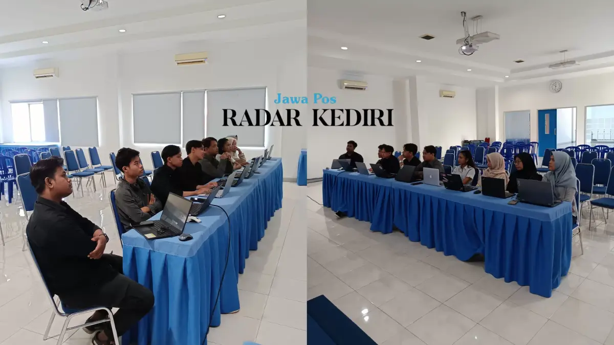
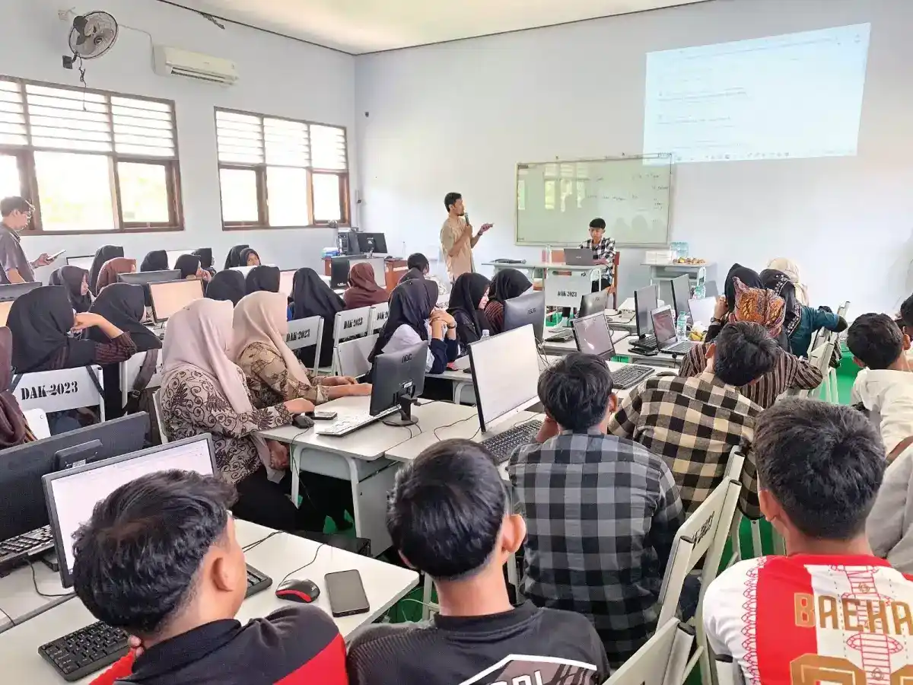
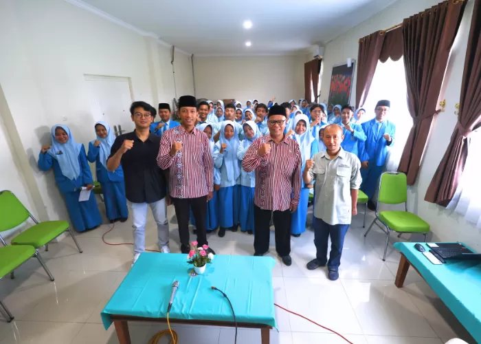
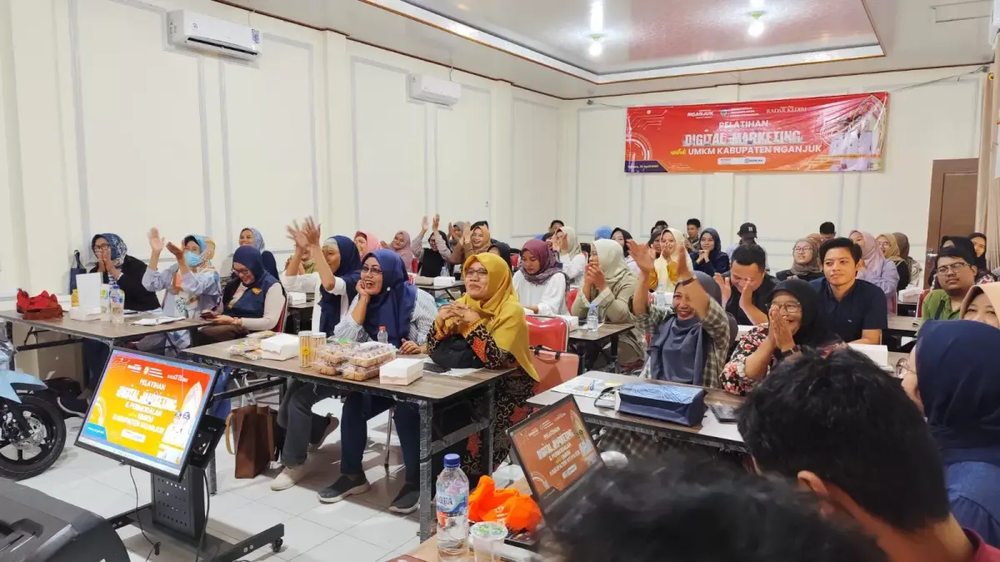
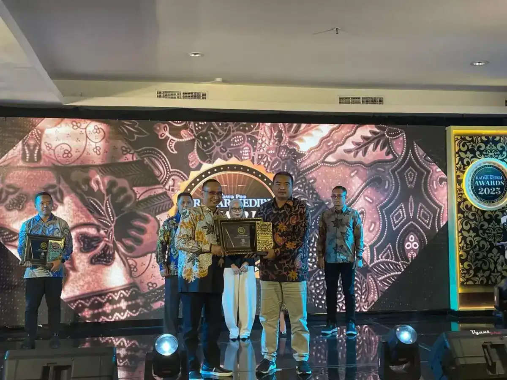
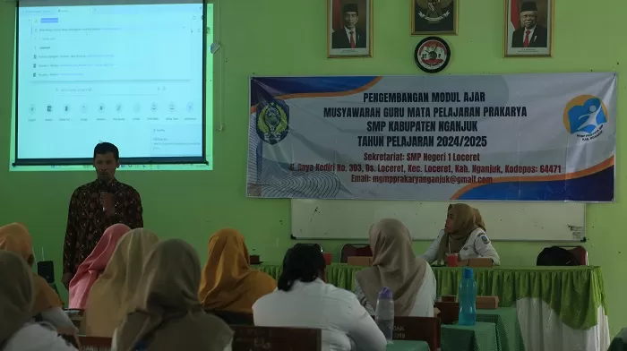
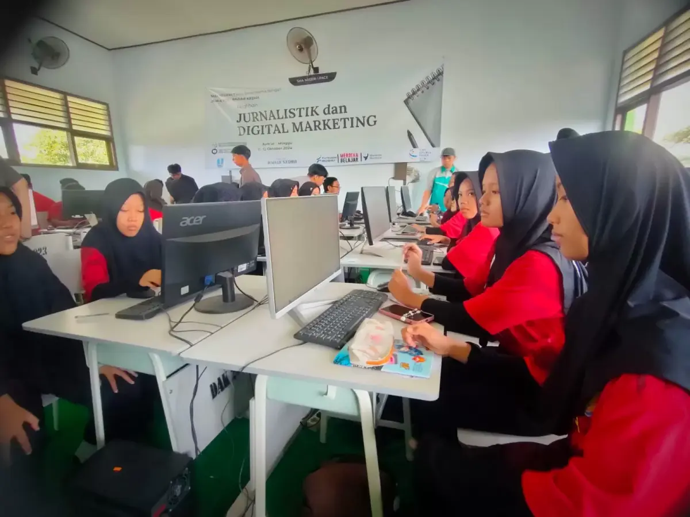
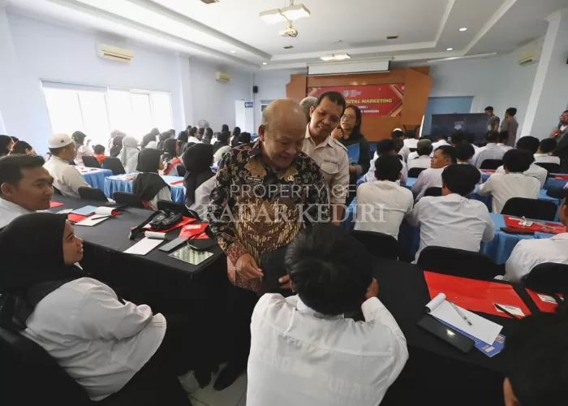
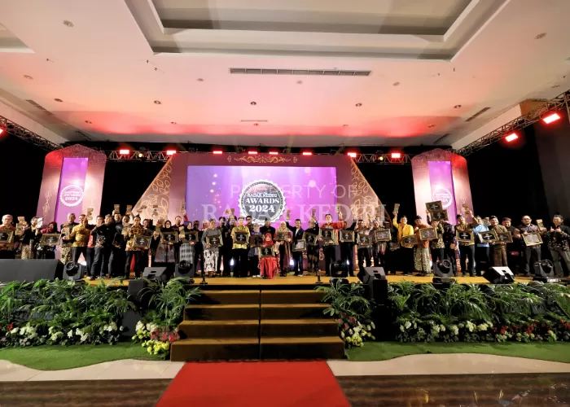

Magang Mahasiswa
Program Magang Mahasiswa
RK Institute meluncurkan program magang eksklusif bersama GM Academy Malang untuk mencetak 30 talenta digital terbaik di Kediri.
Terbaru
Jelajahi rekam jejak pelaksanaan pelatihan dan paket event yang telah sukses kami selenggarakan bersama berbagai mitra instansi dan korporasi.

RK Institute meluncurkan program magang eksklusif bersama GM Academy Malang untuk mencetak 30 talenta digital terbaik di Kediri.

SMKN 1 Kras berkolaborasi dengan Jawa Pos Radar Kediri menggelar pelatihan digital marketing.

Pelatihan digital marketing disambut antusias oleh puluhan guru honorer di Kabupaten Kediri.

MAN 3 Kediri membekali siswanya dengan pelatihan jurnalistik dan public speaking. Temukan mengapa dua keterampilan ini menjadi kunci sukses pelajar dalam membangun pemikiran kritis dan rasa percaya diri di era digital.

Ratusan guru honorer Kabupaten Kediri mengikuti pelatihan digital marketing — termasuk fotografi produk dengan smartphone. Pelajari mengapa visual produk jadi kunci pemasaran online yang efektif dan bagaimana pelatihan ini mengubah cara mereka berjualan.

Puluhan mahasiswa sarjana keperawatan Sekolah Tinggi Ilmu Kesehatan (STIKes) Karya Husada Kediri mengikuti pelatihan jurnalistik dan public speaking.

136 siswa MTsN 2 Kota Kediri membuktikan bahwa karakter strategis tidak lahir dari buku teks — melainkan dari tantangan nyata di lapangan. Ini yang terjadi di balik outbound School Journalist Trip yang bikin mereka berubah.

Siswa SMK Al Huda Kota Kediri ikuti pelatihan desain grafis dan website untuk mengelola media sekolah secara profesional. Pelajari tips praktis yang dibagikan pemateri dan mengapa skill ini jadi bekal karier paling dibutuhkan di era digital.

525 finalis bertarung di Grand Final KKA Radar Kediri 2025 — tapi hanya sedikit yang pulang membawa medali, uang, dan piagam. Ini strategi nyata yang membedakan para juara dari peserta lainnya, dan cara mempersiapkan diri dari jauh hari.

Langsung Bisa Bikin Website Keren Pelatihan Jurnalistik dan Digital Marketing di SMAN 1 Pace.

Siswa Madrasah Aliyah Negeri (MAN) 2 Nganjuk belajar jurnalistik dan fotografi melalui Proghram Safari Jurnalistik Ramadan

Dinas Koperasi dan Usaha Mikro (Dinkop UM) Kabupaten Nganjuk bekerja sama dengan Jawa Pos Radar Nganjuk menggelar Pelatihan Digital Marketing untuk pelaku UMKM

PG Pesantren Baru menerima penghargaan dengan kategori An Outstanding Institution in Good Governance for Sustainable Growth.

Puluhan guru di Kabupaten Nganjuk mengikuti Pengembangan Modul Ajar Musyawarah Guru Mata Pelajaran (MGMP) Prakarya tahun 2024/2025.

Sebanyak 45 pelajar SMAN 1 Pace antusias mengikuti pelatihan jurnalistik dan digital marketing bersama Jawa Pos Radar Kediri.

Kepala Dinas Pendidikan dan GM Radar Kediri hadir langsung memantau pelatihan digital marketing bagi siswa PKBM Kabupaten Kediri.

Diselenggarakan di Insumo Kediri Convention Center (IKCC), malam penganugerahan puluhan tokoh, perusahaan, dan lembaga itu sekaligus jadi momentum memperkenalkan lembaga semi-otonom baru di bawah Jawa Pos Radar Kediri. Yakni, Radar Kediri Institute (RK Institute).